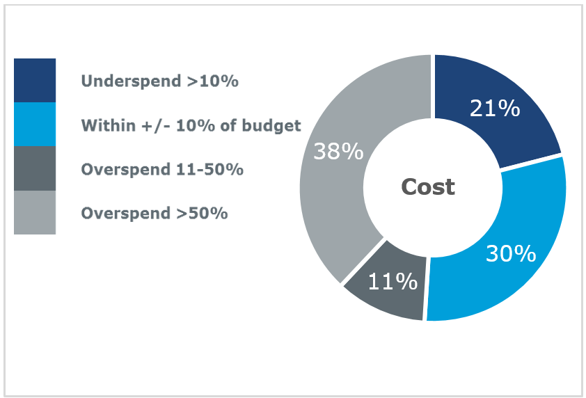
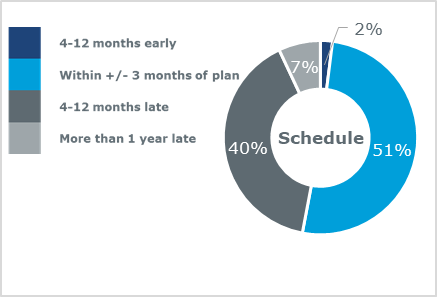

Why moving to standard contracts can benefit your business

Gonzalo Rosa
Director
North America
In the natural resources sector, the main drivers of project success — primarily comprehensive front end loading, appropriate engineering definition, a strong functioning team with the right skillset — are well-known, if not always universally applied. Yet there is a less familiar, largely overlooked, but still essential element that could help improve project delivery for organisations of all sizes: the use of standard forms of contract as opposed to bespoke forms.
Adversaries contend the extremely large and complex projects involved in the natural resources sectors create a set of unique and challenging dynamics which are more adequately governed using bespoke forms of contract. But consider the infrastructure sector. It has parallels in project complexity, is managed on far smaller budgets, yet the majority of projects are delivered using standard contracts. Both need to exercise change management, manage risk, make payments and resolve differences or disputes on the way to delivering the project.
Types of standard contracts used in natural resources
International federation of consulting engineers (FIDIC) and New Engineering Contracts (NEC) contracts are both part of standard families of contracts.
NEC contracts
NEC contracts can be used in a variety of locations and commercial situations including procurement for goods, works or services. Sasol has used NEC contracts since the mid-1990s and now uses the NEC3 suite for all its chemical, oil and gas projects in Southern Africa.
FIDIC contracts
FIDIC contracts are an international standard for procuring work in the consulting and construction industry. They are widely used in Africa on mining projects, and in other international locations where there is a heavy engineering aspect. This includes in particular offshore oil and gas and renewables projects.
Why change to standard contracts?
According to McKinsey & Company, more than four out of five mining projects come in late and over budget, by an average of 43 percent.
The Performance Forum, a Joint Industry Project managed on behalf of the members by Turner & Townsend, has reported that almost half of offshore projects complete late and over budget.
There are many reasons given for project delays and cost overruns.
Factors include a lack of understanding of technical and non-technical risks, inadequate risk assessment, and perhaps a poor choice of contractor or an inappropriate choice of contracting strategy for the level of detail at contract award. Once in execution, poor communication, non-compliance with terms and obligations, scope changes, competition for resources, and contractual dispute resolution can lead the project to move off course against schedule or cause costs to increase.
Despite the current, more optimistic commodity price outlook for the natural resources industries, the concern for project owners and developers remains that few projects consistently deliver in accordance with the cost and schedule commitments set out at project sanction.
 
Following industry dialogue with over 20 senior project professionals from operator, engineering and contractor organisations involved in capital projects costing between US$100 million and US$1 billion-plus, we found a stark unawareness of not only the benefits of standard forms but even the existence of standard forms of contract.
Bespoke contract challenges
The natural resources industries generally prefer and will normally require their own standard pro forma conditions to be used.
In almost every case, individual operators develop their own bespoke form of contract, which they are comfortable with. They know the terms and that matters are addressed in an acceptable and often favorable way.
However, our project delivery experience suggests these do not provide the expected benefits.
Biased terms
Terms are usually biased in favor of one organisation, not least as they are drafted by their legal representative.
As a result, negotiations with suppliers seeking a more balanced allocation of risk can be protracted and costly.
Unfamiliarity with the contract terms
Suppliers unfamiliar with the contract terms will not appreciate how the contract operates. This can give rise to the potential for tendering an inflated price or vigorous under-bidding of what could be administratively burdensome terms and conditions. This has the potential to create a negative cash flow situation with the ultimate risk of insolvency.
Additionally, following mobilisation, there will be an operational learning curve at a cost to one party or the other according to the contractual commercial model. Of course, this is avoided when single sourcing an existing supplier, but owners will lose competitive tension by only using suppliers that are already familiar with their contracts.
Unclear or conflicting terms
To expedite contract production there is a tendency to 'cut and paste' terms and conditions from previous documentation rather than compile new. This recycling of terms and conditions initially saves time but inevitably creates areas of contractual weakness, ambiguities and inconsistencies when terms and conditions are not relevant to the project, or if project specific data or recent legislation has not been considered.
Unclear or conflicting terms will impact on project delivery and in some instances, recycling terms might restrict innovation, resulting in a less appropriate, less efficient or less robust contract than intended.
Worse still, lessons learnt through poor drafting in relation to earlier phases may not be carried over and the contract becomes increasingly bulky and cumbersome through adding new clauses and schedules to previous project content.
Where the terms are unclear, bespoke contracts can inadvertently expose the parties to liabilities or increased duties of care.
Benefiting from standard contracts
Supporting a standard approach to contracting might surprise project teams who assume that the best contract will always be one that is tailor-made to their own specific project requirements.
Our experience shows that standard contracts offer distinct advantages over bespoke contracts, not only because they are generally easier to follow and apply, but because they provide numerous time and cost savings due to reductions in negotiation time, risk and disputes.
Negotiation time: Standard contracts enable the parties to quickly and easily agree on the non-controversial and repetitive aspects of the contract (generally 80 per cent) and focus their attention of the remaining 20 per cent that adds value or where there are significant differences of opinion.
Risk: Taking the time to focus on the more controversial aspects of the contract increases commercial awareness and encourages an increasingly balanced approach to risk, along with the capability to allocate the risk with the party best placed to mitigate it.
Disputes: with consistent use of the same model contract comes familiarisation and greater understanding, reducing the potential for disputes due to a reduction in ambiguity, which will benefit both owners and suppliers.
Besides this, standard forms reflect the latest legislation of the jurisdiction within which the contract is operated, are supported by legal precedence and case law, which can aid interpretation, and support the development of a balanced approach to risk allocation for both parties.
Generating tangible value using standard contracts
The construction industry continues to evolve, embracing new models for engaging the supply chain, innovative contractual arrangements and ways of working.
Standard contracts are one way to offer the natural resources industry a real opportunity to increase the efficiency of project delivery across the entire supply chain, providing owners and operators focus on long-term, industry-wide benefits.
This includes faster and more efficient project development from concept selection to completion, with improved interface management, resolution of technical issues, information flow and risk management.
Increasing regional collaboration and opportunity
If the natural resources sector, particularly those large organisations with significant buying power, could make the shift away from bespoke contracts, it might provide the ability for local contractors to compete for work in region, necessary to attract supplier diversity into the sector. This will provide a platform for increasingly balanced negotiation and collaboration as well as setting an example for peer organisations to follow which will create industry-wide benefits if adopted.
This is not to suggest that change is easy, but considering the potential benefits, we believe that adopting a standard contract approach will be a clear win for the industry as a whole.
There will be challenges for companies that want to switch from bespoke to standard contracts, particularly if they have not operated this way in the past. It will be to little avail trialing use of standard contracts in a particular project if all parties are not trained; which is why it is critical that the right training is provided.
Our team often see examples where contractual payment terms do not operate as intended, or where over-sized contracts containing a significant amount of non-relevant detail or imported terms from different contract forms, have led to confusion on how to apply such terms in practice.
But we unanimously agree that it is far easier to train organisations and their suppliers on how to administer and manage a standard contract, in place of a bespoke contract.
It is clear from our industry dialogue that some organisations in the natural resources sector are at least interested in learning more about the advantages offered by standard contracts. Certainly, if your organisation has only ever used bespoke contracts, it might be time to ask yourself why, because we contend there is a different, more efficient way.
Yes, standard contracts do represent a change — but, we believe, a positive one that can be used at limited cost while providing a better business solution in the short, medium and long term. And who doesn't want that?